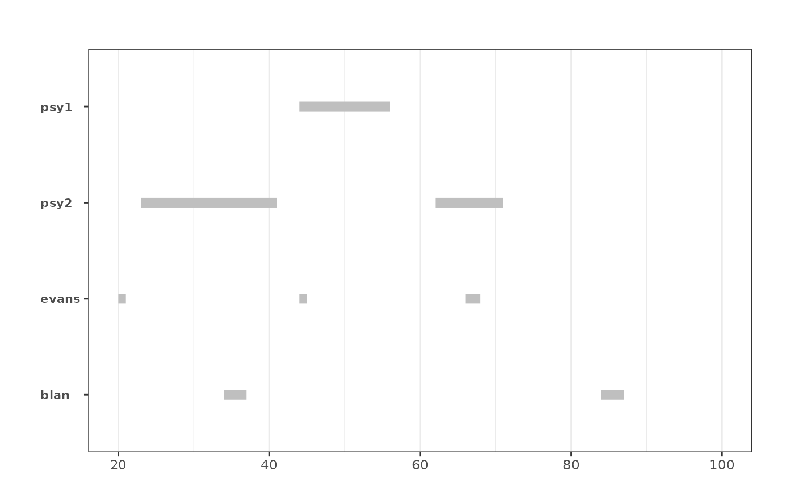

Computes the origination, termination and duration of episodes during which the time series display explosive dynamics.
Usage
datestamp(object, cv = NULL, min_duration = 0L, ...)
# S3 method for class 'radf_obj'
datestamp(
object,
cv = NULL,
min_duration = 0L,
sig_lvl = 95,
option = c("gsadf", "sadf", "svadf"),
nonrejected = FALSE,
...
)Arguments
- object
An object of class
obj.- cv
An object of class
cv.- min_duration
The minimum duration of an explosive period for it to be reported (default = 0).
- ...
further arguments passed to methods.
- sig_lvl
logical. Significance level, one of 90, 95 or 99. Ignored when
option = "svadf".- option
one of
"gsadf"/"sadf"(PWY/PSY dating againstcv's critical values) or"svadf"(Sarkar & Wells 2026's SV-ADF asymmetric-threshold dating –radf()'s ownbadfcompared against two closed-form, sample-size-only thresholds,log(t)/10for origination andlog(t)/2for collapse; nocvneeded). See Caveats.- nonrejected
logical. Whether to apply datestamping technique to the series that were not able to reject the Null hypothesis. Ignored when
option = "svadf".
Value
Return a table with the following columns:
Start:
Peak:
End:
Duration:
Signal:
Ongoing:
Returns a list containing the estimated origination and termination dates of episodes of explosive behaviour and the corresponding duration.
Details
Datestamp also stores a vector whose elements take the value of 1 when there is a period of explosive behaviour and 0 otherwise. This output can serve as a dummy variable for the occurrence of exuberance.
Caveats
option = "svadf": ![[Experimental]](figures/lifecycle-experimental.svg)
Sarkar & Wells (2026) is a non-peer-reviewed preprint, a different
bar than every other source this package implements. The same note is
emitted as a message when called with this option. Detects at most one
origination/collapse pair per series (the paper's own procedure), not
every recurring episode the way "gsadf"/"sadf" do.
References
Phillips, P. C. B., Shi, S., & Yu, J. (2015). Testing for Multiple Bubbles: Historical Episodes of Exuberance and Collapse in the S&P 500. International Economic Review, 56(4), 1043-1078.
Sarkar, A., & Wells, M. T. (2026). Is there an AI bubble? Robust date-stamping for periods of exuberance. arXiv:2604.12062.
Examples
rsim_data <- radf(sim_data)
ds_data <- datestamp(rsim_data)
#> Using `radf_crit` for `cv`.
ds_data
#>
#> ── Datestamp (min_duration = 0) ───────────────────────────────── Monte Carlo ──
#>
#> psy1 :
#> Start Peak End Duration Signal Ongoing
#> 1 44 48 56 12 positive FALSE
#>
#> psy2 :
#> Start Peak End Duration Signal Ongoing
#> 1 22 40 41 19 positive FALSE
#> 2 62 70 71 9 positive FALSE
#>
#> evans :
#> Start Peak End Duration Signal Ongoing
#> 1 20 20 21 1 positive FALSE
#> 2 44 44 45 1 positive FALSE
#> 3 66 67 68 2 positive FALSE
#>
#> blan :
#> Start Peak End Duration Signal Ongoing
#> 1 34 36 37 3 positive FALSE
#> 2 84 86 87 3 positive FALSE
#>
# Choose minimum window
datestamp(rsim_data, min_duration = psy_ds(nrow(sim_data)))
#> Using `radf_crit` for `cv`.
#>
#> ── Datestamp (min_duration = 5) ───────────────────────────────── Monte Carlo ──
#>
#> psy1 :
#> Start Peak End Duration Signal Ongoing
#> 1 44 48 56 12 positive FALSE
#>
#> psy2 :
#> Start Peak End Duration Signal Ongoing
#> 1 22 40 41 19 positive FALSE
#> 2 62 70 71 9 positive FALSE
#>
autoplot(ds_data)

# SV-ADF asymmetric-threshold dating (no critical values needed)
datestamp(rsim_data, option = "svadf")
#> Experimental. Sarkar & Wells (2026) is a non-peer-reviewed preprint; see ?datestamp, Caveats section.
#>
#> ── Datestamp (min_duration = 0) ──────────────── SV-ADF (Sarkar & Wells 2026) ──
#>
#> ℹ Experimental. Sarkar & Wells (2026) is a non-peer-reviewed preprint; see ?datestamp, Caveats section.
#>
#> psy1 :
#> Start Peak End Duration Signal Ongoing
#> 1 48 48 49 1 positive FALSE
#>
#> psy2 :
#> Start Peak End Duration Signal Ongoing
#> 1 23 23 24 1 positive FALSE
#>
#> evans :
#> Start Peak End Duration Signal Ongoing
#> 1 20 20 21 1 positive FALSE
#>
#> div :
#> Start Peak End Duration Signal Ongoing
#> 1 22 22 23 1 positive FALSE
#>
#> blan :
#> Start Peak End Duration Signal Ongoing
#> 1 35 36 37 2 positive FALSE
#>